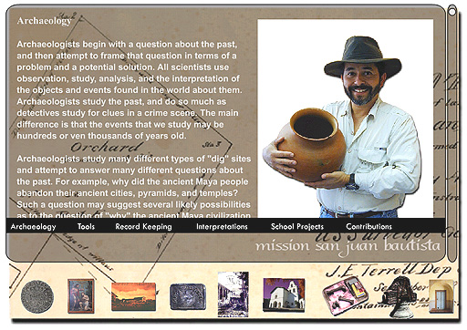

Screen 5: This portion of the CD-ROM, which can be accessed
by way of button number seven at the bottom of the screen provides an overview
of the tools and techniques used by archaeologists to obtain information
and make interpretations about the past of such sites as Old Mission San
Juan Bautista.
Text, Photographs, and Multimedia
Copyright Ruben G. Mendoza, 2000
Back Main
Forward